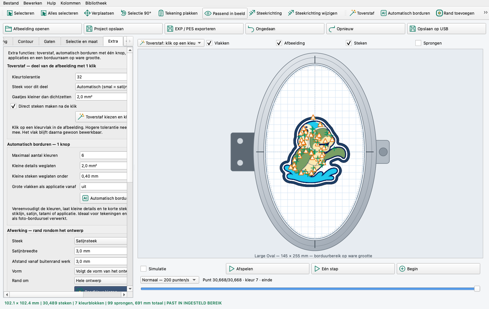
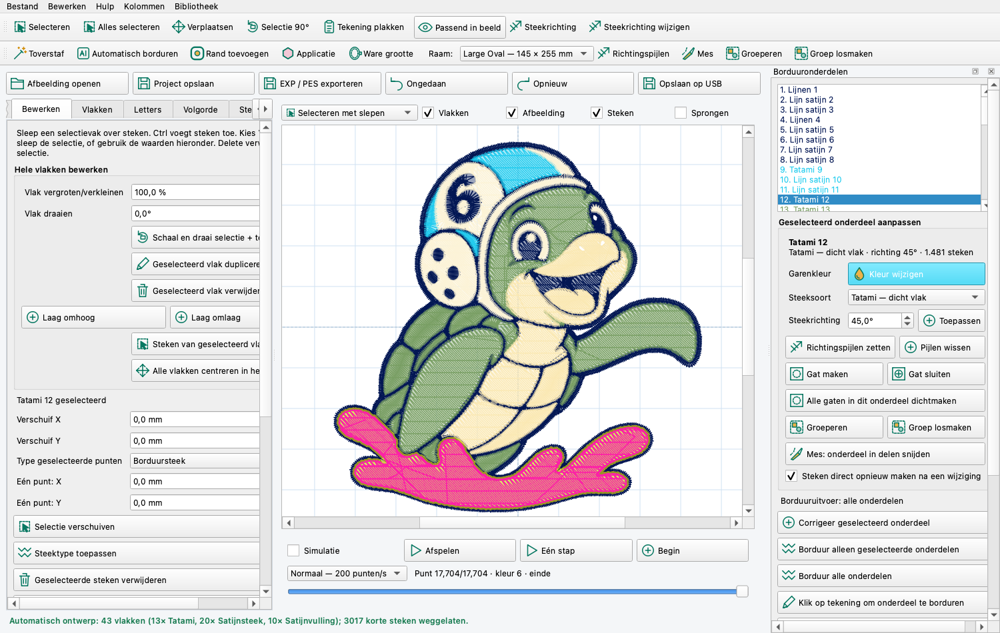
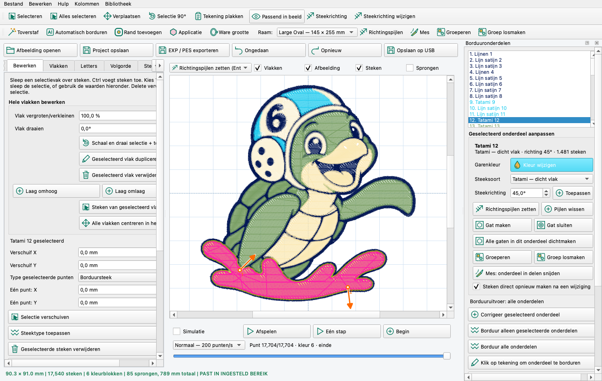
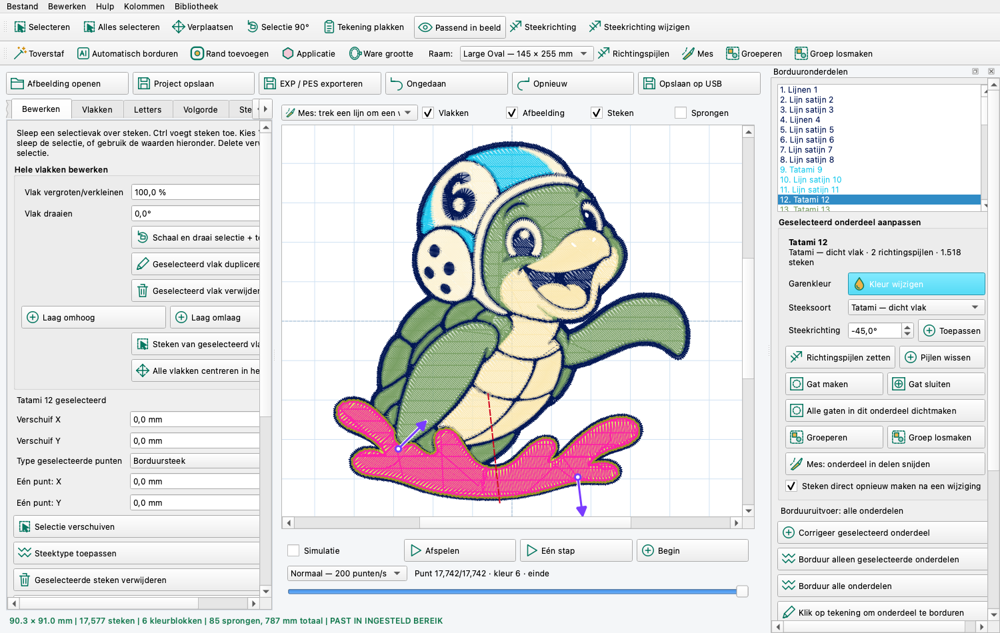

Deze handleiding beschrijft alle functies van het programma, met bij elke functie hoe je hem gebruikt. Functies die nieuw zijn in versie 2.7 hebben het label NIEUW; functies die in versie 2.6 zijn toegevoegd hebben het label 2.6.
Altijd eerst proefborduren. Ikkanborduren is een zelfstandig programma, geen BERNINA-product, en is nog niet op een echte Bernina 540 getest. Maak elk nieuw ontwerp eerst op een restje van dezelfde stof, met passende versteviging.
Bewaar je werk als project (BST) met Ctrl+S. Een project bewaart de tekening, de vlakken, de steken en alle instellingen, zodat je later verder kunt. Een EXP- of PES-bestand bevat alleen de steken.

| Onderdeel | Wat het doet |
|---|---|
| Bovenste knoppenbalk | Selecteren, Alles selecteren, Verplaatsen, Selectie 90°, Tekening plakken, Passend in beeld, Steekrichting tonen en wijzigen. |
| Tweede knoppenbalk 2.6 | Toverstaf, Automatisch borduren, Rand toevoegen, Applicatie, Ware grootte, de keuze Raam, en nieuw in 2.7: Richtingspijlen, Mes, Groeperen en Groep losmaken. |
| Grote knoppen | Afbeelding openen, Project opslaan, EXP / PES exporteren, Ongedaan, Opnieuw, Opslaan op USB. |
| Tabbladen links | Afbeelding, Ring & steken, Bewerken, Vlakken, Letters, Volgorde, Steekrichting, Contour, Gaten, Selectie en maat en Extra. Zie je een tabblad niet, klik dan op de pijltjes naast de tabbladen. |
| Gereedschapskeuze boven het werkvlak | Hier staat wat de muis op dit moment doet, bijvoorbeeld Vlak tekenen, Kleurpenseel of Toverstaf. |
| Vinkjes Vlakken / Afbeelding / Steken / Sprongen | Bepalen wat je ziet. Ze veranderen niets aan het ontwerp. |
| Statusregel onderaan | Maat, aantal steken, kleurblokken en sprongen. Groen betekent dat het ontwerp in de ring past. Bij rood vallen punten buiten de ring; die worden in het werkvlak rood getekend. |
| Menu Kolommen | Opent de extra kolommen Borduuronderdelen en Steken en patronen. Compact scherm sluit ze weer. |
| Menu Bibliotheek | Je eigen borduurbibliotheek in Documenten\Ikkanborduren\Bibliotheek. Hier kun je PES-, EXP- en BST-bestanden toevoegen, verwijderen en de map openen. |
Zoomen en schuiven: zoom met het muiswiel en schuif met de middelste muisknop ingedrukt. Passend in beeld toont het hele ontwerp.
Ongedaan maken (Ctrl+Z) en Opnieuw (Ctrl+Y) werken voor alle bewerkingen.
Wil je tijdens het maken van een borduursel een deel veranderen, klik er dan gewoon op.

Met Ctrl+klik voeg je meer onderdelen toe aan de selectie, of haal je er een weg. Andersom werkt het ook: klik je in de garenkleurenlijst op een kleur, dan lichten alle onderdelen in die kleur op. In de garenkleurenlijst staat nu ook bij elke kleur welke onderdelen erin zitten.
Rechts, onder de lijst met onderdelen, staat het vak Geselecteerd onderdeel aanpassen. Alles wat je hier verandert, geldt voor de geselecteerde onderdelen. De steken worden meteen opnieuw gemaakt; je hoeft niet meer op een aparte knop te drukken.
| Knop of keuze | Wat het doet |
|---|---|
| Kleur wijzigen | Kies een nieuwe garenkleur voor alleen dit onderdeel. Andere onderdelen met dezelfde kleur blijven zoals ze zijn. |
| Steeksoort | Bijvoorbeeld van Tatami naar Satijnsteek of Satijnvulling. Zie Steeksoorten. |
| Steekrichting + Toepassen | Typ een hoek en druk Enter of klik Toepassen. Wil je op verschillende plekken een andere richting, gebruik dan Richtingspijlen. |
| Gat maken / Gat sluiten | Markeer met klikken een gebied en druk Enter (zie Gaten). |
| Alle gaten in dit onderdeel dichtmaken | Vult in één keer alle gaten van het onderdeel. |
| Groeperen / Groep losmaken / Mes | Zie Groeperen en het mes. |
| Steken direct opnieuw maken na een wijziging | Zet dit vinkje uit als je eerst veel wilt veranderen en daarna pas één keer steken wilt maken. |
De knop Garenkleur wijzigen onder de garenkleurenlijst verandert de kleur van alle onderdelen in die kleur. De nieuwe kleur blijft ook bewaard als je later opnieuw steken maakt.
Steken die je met de hand hebt verschoven of verwijderd, worden bij het opnieuw maken vervangen. Doe handwerk aan losse steekpunten daarom als laatste.
Met richtingspijlen geef je op verschillende plekken van een vlak of lijn een andere steekrichting. Je zet eerst alle pijlen en past ze daarna in één keer toe met Enter.

Klik je daarna op één onderdeel van de groep, dan wordt de hele groep gekozen. Zo verplaats, draai, vergroot of verkleur je alles samen. In de onderdelenlijst staat [Groep 1] achter de naam. Wil je toch één onderdeel uit de groep aanpassen, gebruik dan Alt+klik, of kies het in de onderdelenlijst.
Groep losmaken (Ctrl+Shift+G) maakt van de groep weer losse onderdelen.
Met het mes snijd je een vlak langs een lijn in stukken. Elk stuk wordt een zelfstandig onderdeel met eigen kleur, steek en richting.

Langs de snijlijn overlappen de delen een heel klein beetje, zodat er in het borduursel geen spleet ontstaat. Met Ongedaan (Ctrl+Z) zet je het vlak weer in één stuk.
Met de toverstaf maak je met één klik een borduurvlak van een deel van de tekening. Klik je bijvoorbeeld op een blauw vlak, dan wordt dat blauwe deel in één keer omgezet en meteen in steken getoond.
Instellingen op het tabblad Extra, groep Toverstaf:
| Instelling | Betekenis |
|---|---|
| Kleurtolerantie | Hoe sterk een kleur mag afwijken van de kleur waarop je klikt. Bij een lage waarde (10–20) neemt de toverstaf alleen precies die kleur mee. Bij een hogere waarde (40–80) neemt hij ook lichtere en donkere tinten mee, wat handig is bij gescande tekeningen. Standaard is 32. |
| Steek voor dit deel | Automatisch kiest zelf: een hele dunne lijn wordt een stiklijn, een lijn wordt een satijnsteek die de lijn volgt, een smal vlak satijnvulling en een breed vlak tatami. Lijnenwerk met dikkere stukken krijgt satijn op de lijnen en tatami op de dikke stukken. Je kunt ook vast kiezen voor tatami, satijn, tatami + satijnrand, applicatie of alleen de contourlijn. |
| Gaatjes kleiner dan … dichtzetten | Kleine vlekjes of glimlichtjes binnen het vlak worden meegevuld, zodat je één net vlak krijgt. Zet dit op 0 als ook kleine openingen open moeten blijven. |
| Direct steken maken na de klik | Staat dit vinkje aan, dan worden de steken meteen berekend. Zet het uit als je eerst veel delen wilt aanklikken en daarna in één keer steken wilt maken. |
Ligt de klik op de witte achtergrond, dan meldt het programma dat. Moet wit wél geborduurd worden, zet dan op het tabblad Afbeelding het vinkje Witte achtergrond langs de rand weghalen uit.
Een vlak van de toverstaf is een gewoon vlak. Je kunt daarna de contourpunten aanpassen, de steek of kleur veranderen, het vlak verplaatsen of verwijderen.
Zet een hele tekening of een heel logo in één keer om in een borduurontwerp. Het programma:
| Instelling | Betekenis |
|---|---|
| Maximaal aantal kleuren | Minder kleuren geeft minder garenwissels en een rustiger ontwerp. |
| Kleine details weglaten | Vlakjes kleiner dan dit oppervlak (in mm²) worden weggelaten. Verhoog de waarde als er te veel kleine snippers ontstaan. |
| Kleine steken weglaten onder | Steken korter dan deze lengte worden samengevoegd met de steek ernaast. Automatisch borduren zet deze waarde op 0,4 mm als hij op uit stond. De instelling geldt daarna ook voor Maak steken uit alle vlakken. Zet hem terug op uit als je alle steken wilt houden. |
| Grote vlakken als applicatie vanaf | Vlakken die groter zijn dan dit oppervlak worden een applicatie in plaats van een dichte vulling. Dat bespaart veel steken bij grote vlakken. Standaard staat dit uit. |
Na het automatisch borduren kun je elk vlak nog apart aanpassen op het tabblad Vlakken. Een foto omzetten naar een foto-borduursel kan dit programma niet. Gebruik tekeningen, logo's en illustraties met duidelijke kleurvlakken.
Hiermee zet je een rand om het hele ontwerp, bijvoorbeeld voor een embleem of patch.
| Instelling | Keuzes |
|---|---|
| Steek | Satijnsteek, enkele, dubbele of drievoudige stiklijn. Bij een dubbele stiklijn gaat de naald heen en terug; bij een drievoudige stiklijn wordt elke steek drie keer genaaid, zodat de lijn dik en duidelijk wordt. |
| Satijnbreedte | 1 tot 5 mm. Deze instelling geldt alleen bij satijnsteek. |
| Afstand vanaf buitenrand werk | De ruimte tussen de buitenkant van je ontwerp en de binnenkant van de rand, van 0 tot 50 mm. Bij 0 ligt de rand direct tegen het ontwerp. |
| Vorm | Volgt de vorm van het ontwerp (de rand loopt mee met de buitenlijn), Rechthoek, Ovaal of Cirkel. |
| Rand om | Hele ontwerp, of Alleen geselecteerde vlakken. |
| Randkleur kiezen | De garenkleur van de rand. |
Bij een applicatie naai je een stukje stof op het werk in plaats van een vlak dicht te borduren. Elk applicatiedeel borduurt het programma in drie stappen. Tussen de stappen stopt de machine.
| Stap | De machine borduurt | Daarna doe jij |
|---|---|---|
| 1 | Plaatsingslijn: een stiklijn die laat zien waar de stof moet komen. | De machine stopt. Leg het stukje applicatiestof over de lijn; het mag ruim over de lijn vallen. |
| 2 | Vastzetsteek: een open zigzag, dubbele of enkele stiklijn die de stof vastzet. | De machine stopt. Haal de ring uit de machine zonder de stof uit de ring te halen, en knip de stof vlak langs de vastzetsteek af. Zet de ring terug. |
| 3 | Satijnrand: dekt de geknipte rand netjes af. | Klaar. |
De stops staan in het borduurbestand als kleurwissels met dezelfde garenkleur. Je hoeft dus geen ander garen te pakken; ga gewoon verder. In de kleurenlijst staat bij elke stop wat je moet doen, bijvoorbeeld Applicatie 2/3: stof neerleggen en vastzetten.
| Instelling | Betekenis |
|---|---|
| Breedte satijnrand | 1 tot 5 mm. Standaard is 3 mm. Gebruik een bredere rand voor stof die makkelijk rafelt, zoals linnen. |
| Vastzetsteek | Open zigzag houdt de stof het stevigst vast. Een dubbele of enkele stiklijn is fijner, bijvoorbeeld voor vilt. |
Heeft een applicatiedeel een uitsparing, bijvoorbeeld een raampje, dan blijft die opening open. Rond de uitsparing komt de satijnrand op de stof te liggen, en niet in de opening.
Klik Snijpatroon applicatiedelen bewaren (SVG). Je krijgt een bestand met alle applicatiedelen op ware grootte. Print het op 100% (niet op 'passend maken'), knip de vormen uit en gebruik ze als mal voor de stof. Knip de stof iets ruimer dan de mal.
Kies je ring bovenaan bij Raam, op Extra of op Ring & steken. De drie keuzes zijn steeds gelijk aan elkaar.
| Raam | Borduurbereik |
|---|---|
| Medium | 100 × 130 mm, ovaal |
| Large Oval | 145 × 255 mm, ovaal |
| Mega Hoop | 150 × 400 mm |
| Eigen maat | Vul zelf breedte en hoogte in op Ring & steken. |
Mega Hoop: 150 × 400 mm is het totale bereik. De machine borduurt dat in meerdere raamposities. Dit programma verdeelt een ontwerp niet automatisch over de posities. Ontwerpen die hoger zijn dan 251 mm worden daarom niet geëxporteerd; verdeel zo'n ontwerp zelf over aparte projecten.
| Knop of instelling | Gebruik |
|---|---|
| Aantal kleuren + Kleuren vereenvoudigen | Brengt de afbeelding terug tot dit aantal effen kleuren. |
| Witte achtergrond langs de rand weghalen | Wit aan de buitenkant wordt niet geborduurd. |
| Kleurenlijst | Dubbelklik op een kleur of klik Geselecteerde kleur wijzigen om die kleur te vervangen. Geselecteerde kleur weglaten haalt een kleur helemaal weg. |
| Kleurpenseel / Gum | Kies deze in de gereedschapskeuze om met de muis in de afbeelding te schilderen of te gummen. De dikte stel je in bij Penseeldikte. |
| Kleine details weglaten, Contour gladmaken, Vergelijkbare kleuren samen | Instellingen voor Afbeelding opschonen. Hiermee verwijder je snippers, maak je randen glad en voeg je bijna gelijke tinten samen. |
| Afbeelding naar bewerkbare vlakken | Zet de hele afbeelding om in vlakken die je daarna kunt aanpassen, zonder dat er steken worden gemaakt. |
| Afbeelding alleen als overtrekvoorbeeld | De afbeelding wordt licht getoond, zodat je er vlakken overheen kunt tekenen. |
| Logo bewaren als vector (SVG) | Bewaart de vereenvoudigde afbeelding als SVG-bestand. |
Een vlak is een vorm met een buitenlijn die het programma met steken vult. Een open stiklijn is een lijn zonder vulling.
| Instelling | Betekenis |
|---|---|
| Naam en kleur | De naam staat in de lijsten; de kleur is ook de garenkleur. |
| Steekvulling | Zie Steeksoorten. |
| Borduurfase | Punt / accent eerst, Normale laagvolgorde of Rechte satijnlijn als laatste. |
| Rijafstand / patroonmaat | De afstand tussen de vulrijen. Kleiner betekent dichter. Standaard is 0,35 mm. Bij patronen zoals sterretjes is dit de grootte van het motief. |
| Max. steeklengte | De langste steek binnen een vulling of lijn. |
| Satijnbreedte | De breedte van een satijnband, maximaal 5 mm. |
| Vulrichting | De hoek van de vulrijen. Druk Enter om de hoek meteen toe te passen. |
| Trekcompensatie | Maakt het vlak iets groter, zodat het na het borduren niet te klein uitvalt. |
| Onderlaag vóór de vulling | Eerst een lichte steunlaag, daarna de bovenlaag. |
Klik Instellingen toepassen op geselecteerd vlak en daarna Maak steken uit alle vlakken.
| Steek | Gebruik |
|---|---|
| Tatami — dicht vlak | Dichte vulling voor grote vlakken. Dunne lijnen en smalle stukken in het vlak krijgen vanzelf een satijnsteek die de lijn volgt, zodat ook die helemaal gevuld worden. NIEUW |
| Satijnsteek — volgt de vorm NIEUW | Voor lijnen en smalle delen. De satijn loopt mee met de lijn, ook door bochten en kruisingen. Een lijn wordt in één doorgaande beweging geborduurd: eerst een stiklijn door het midden (onderlaag), daarna de satijn erover. |
| Satijnvulling — van rand tot rand NIEUW | Glanzende satijn die het hele vlak vult, in de gekozen steekrichting. Voor smalle vlakken; steken langer dan 4,8 mm worden gesplitst. |
| Satijnrand langs de contour | Glanzende band langs de rand. Op een open lijn is het een satijnkoord. |
| Tatami + satijnrand | Een vulling met een satijnrand eromheen. |
| Enkele stiklijn | Een dunne lijn. |
| Dubbele stiklijn 2.6 | De naald gaat heen en weer terug, zodat de lijn steviger is en eindigt waar hij begon. |
| Drievoudige stiklijn | Elke steek wordt drie keer genaaid. Dat geeft een dikke, duidelijke lijn. |
| Onderbroken stiklijn | Een streepjeslijn met open stukjes. |
| Zigzaglijn | Een open zigzag langs een lijn. |
| Kruissteekvulling | Kruisjes in het vlak. Gebruik een patroonmaat van ongeveer 2 mm. |
| Sterretjes, ruitjes, cirkeltjes, chevron, bloemetjes | Decoratieve motieven. De patroonmaat bepaalt de grootte. |
| Applicatie 2.6 | Plaatsingslijn, stop, vastzetten, stop en satijnrand. Zie Applicaties. |
Open via Kolommen de kolom Steken en patronen:
De kolom Borduuronderdelen toont alle vlakken:
Een andere richting op verschillende plekken van één vlak of lijn? Gebruik Richtingspijlen. NIEUW
Snelknoppen: 45°, 90° (Ctrl+9) en 180° (Ctrl+1). Je kunt ook de richtingslijn met de muis slepen en daarna Enter drukken. Een nieuw ontwerp begint op 45°.
Met Eigen TTF / OTF toevoegen gebruik je een eigen lettertype. Favoriete lettertypes kun je bewaren. Voor kleine letters werken dikke, eenvoudige lettertypes het best. Puntjes en accenten worden vóór de letter zelf geborduurd.
Op het tabblad Volgorde bepaal je welk onderdeel eerst geborduurd wordt. Sleep een onderdeel naar een andere plek of gebruik Eerder ↑, Later ↓, Als eerste en Als laatste. Klik daarna Maak steken in gekozen volgorde. Wat later komt, ligt bovenop.
In de automatische stand kiest het programma zelf een volgorde: eerst dezelfde kleur, met zo kort mogelijke sprongen.
Alle maten zijn in millimeters: 60 mm = 6 cm. Vul de breedte of hoogte in; met Verhouding behouden past de andere maat zich vanzelf aan. Klik Maat toepassen op selectie / hele ontwerp. Selecteer je niets, dan verandert de maat van het hele ontwerp.
Vergroot of verklein je bestaande steken, dan verandert ook de dichtheid. Maak na een grote maatwijziging opnieuw steken uit de vlakken.
Onder het werkvlak kun je het borduren afspelen. Vink Simulatie aan en klik Afspelen. Kies de snelheid (Langzaam, Normaal of Snel), ga met Eén stap punt voor punt verder, of sleep de schuifbalk. Begin gaat terug naar het begin. Je ziet welke kleur er wordt geborduurd en of de machine een steek, sprong, knip of kleurwissel maakt.
Bij een applicatie zie je in de simulatie precies waar de machine stopt.
Bij opslaan of exporteren vraagt het programma welke stof je gebruikt, bijvoorbeeld badstof, tricot, jeans, fleece of vilt. Het past dan de dichtheid, trekcompensatie en onderlaag aan, en geeft advies over versteviging, topping en naald. Zie ook STOFPROFIELEN.html.
Heb je losse steken met de hand bewerkt, laat dan Bestaande steken behouden aangevinkt. Anders worden de steken opnieuw berekend en gaan je handmatige wijzigingen verloren.
| Knop | Resultaat |
|---|---|
| Project opslaan (Ctrl+S) | Een BST-bestand met alles erin, om later verder te werken. |
| EXP / PES exporteren | Een borduurbestand voor de machine. Bij EXP worden ook een INF- en een BMP-bestand gemaakt. |
| Start borduren — tekening naar EXP / PES | Doet alles in één keer: stof kiezen, steken maken, controleren of het ontwerp in de ring past en het bestand bewaren. |
| USB-stick / map kiezen + Opslaan op USB | Zet het borduurbestand direct op de USB-stick. Een bestaand bestand met dezelfde naam wordt eerst als reservekopie bewaard. |
| Vlakken als SVG bewaren | De vlakken als vectortekening. |
Zet voor de Bernina 540 het EXP-, INF- en BMP-bestand met dezelfde naam samen op de USB-stick. Verwijder de USB-stick veilig uit Windows voordat je hem eruit haalt.
| Toets | Actie |
|---|---|
| W | Toverstaf 2.6 |
| K | Mes NIEUW |
| Ctrl+G / Ctrl+Shift+G | Groeperen / groep losmaken NIEUW |
| Alt+klik | Eén onderdeel uit een groep kiezen NIEUW |
| Ctrl+klik | Onderdeel aan de selectie toevoegen of eruit halen |
| Ctrl+N | Nieuw ontwerp |
| Ctrl+O | Openen |
| Ctrl+S | Project opslaan |
| Ctrl+Z / Ctrl+Y | Ongedaan maken / Opnieuw |
| Ctrl+A | Alles selecteren |
| Ctrl+V / Shift+V | Tekening plakken |
| Shift+C | Afbeelding kopiëren |
| Ctrl+9 / Ctrl+1 | Steekrichting 90° / 180° |
| Enter | Vlak sluiten, steekrichting of richtingspijlen toepassen |
| Backspace | Laatste punt weg tijdens het tekenen |
| Esc | Tekenen annuleren |
| Delete | Selectie, vlak of contourpunt verwijderen |
| Middelste muisknop slepen | Werkvlak verschuiven |
| Probleem | Oplossing |
|---|---|
| Dunne lijnen worden niet of maar hier en daar gevuld. | Opgelost in 2.7: maak de steken opnieuw (Borduur alle onderdelen). Dunne lijnen krijgen nu vanzelf satijn die de lijn volgt. Kies voor een lijn eventueel zelf Satijnsteek — volgt de vorm. NIEUW |
| Ik wil de kleur van één vlak veranderen, maar er veranderen er meer. | Klik op het vlak en gebruik Kleur wijzigen in het vak Geselecteerd onderdeel aanpassen. Garenkleur wijzigen onder de garenkleurenlijst verandert alle onderdelen in die kleur. Zit het vlak in een groep, gebruik dan Alt+klik. NIEUW |
| Van tatami naar satijn lukt niet. | Klik op het vlak en kies bij Steeksoort Satijnsteek (voor lijnen) of Satijnvulling (voor vlakken). De steken worden meteen opnieuw gemaakt. NIEUW |
| Een richtingspijl wordt genegeerd. | Zet de pijl binnen het vlak of op de lijn. Stiklijnen en patroonvullingen hebben geen steekrichting. NIEUW |
| De toverstaf pakt te weinig. | Verhoog de Kleurtolerantie. |
| De toverstaf pakt te veel, bijvoorbeeld ook het vlak ernaast. | Verlaag de Kleurtolerantie. |
| Automatisch borduren geeft veel kleine snippers. | Verhoog Kleine details weglaten of verlaag het aantal kleuren. |
| Er zijn steken verdwenen die ik wilde houden. | Zet Kleine steken weglaten onder op uit en maak de steken opnieuw. |
| De statusregel is rood: punten buiten de ring. | Verklein het ontwerp, schuif het naar het midden (Alle vlakken centreren in het raam) of kies een grotere ring. |
| Ware grootte klopt niet met de liniaal. | Controleer de schermvergroting van Windows (Instellingen → Beeldscherm → Schaal). |
| Ik zie een tabblad niet. | Klik op de pijltjes naast de tabbladen, of maak het venster breder. |
| Ik zie de tweede knoppenbalk niet. | Klik met rechts op een lege plek naast de knoppenbalken en vink Extra functies aan. |
| Het programma start niet. | Kijk in foutmelding.txt in de programmamap en voer Installatie_Ikkanborduren.bat opnieuw uit. |
Ikkanborduren 2.7.0 — november 2026. Zelfstandig programma voor eigen gebruik; geen BERNINA-, Hatch- of Wilcom-software. Een overzicht van de wijzigingen staan in WIJZIGINGEN_2_7_0.txt en WIJZIGINGEN_2_6_0.txt.